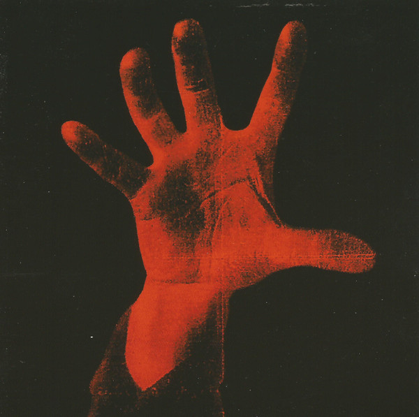
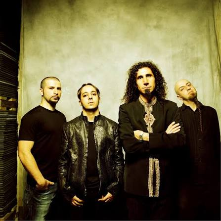
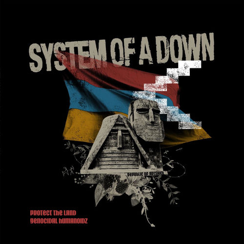

Usa las flechas ← → o los botones para navegar
System of a Down nace en Los Ángeles en 1994, formado por músicos de origen armenio-estadounidense.
Después de tocar en el underground de L.A. y firmar con American Recordings, publican su álbum debut homónimo en 1998, producido por Rick Rubin.
El sonido único mezcla metal, rock experimental, folk armenio y letras políticas.

El 2001 marca el gran salto con Toxicity, uno de los álbumes más influyentes del metal moderno.
En 2005 lanzan el doble álbum Mezmerize / Hypnotize, alcanzando el #1 en Billboard.
Después de una gira intensa, la banda entra en un largo hiato en 2006.

Tras años de proyectos solistas, System of a Down se reúne en 2011 para giras y festivales.
Hoy son considerados una de las bandas más importantes y originales del metal alternativo, con un legado político y musical único.
“Question everything.”
